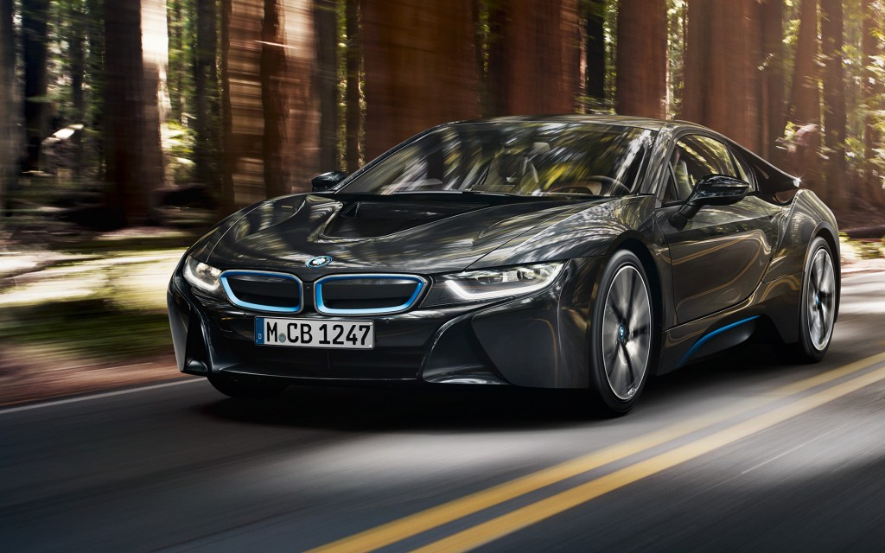
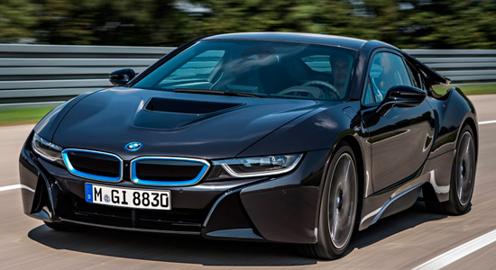
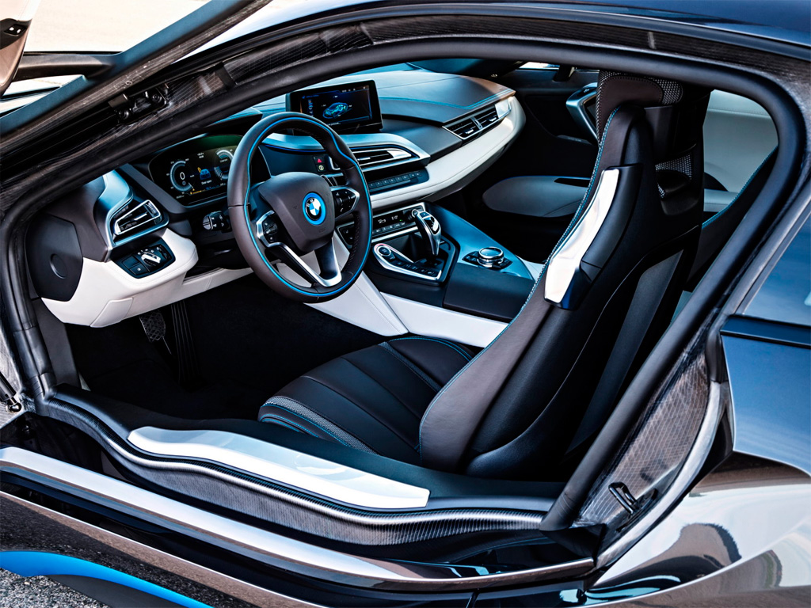
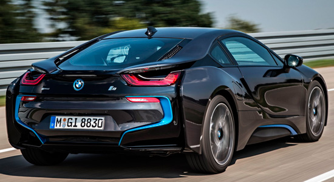

БМВ i8 цена и комплектация. Технические характеристики BMW i8 и обзор с фотографиями.
Эти экологически чистые автомобили относятся к новому бренду — BMW i. Всего таких машин пока две, но планы компании куда масштабнее и перспективней. Новое в этих автомобилях буквально все, включая принципы, по которым они строятся. Производство налажено на абсолютно новом заводе именитой компании, который сам по себе является эталоном экологичности. В какой-то момент времени было принято решение перестроить все заводы по образцу этого производства, хотя до этого еще далеко.
Запас хода может изменяться в зависимости от различных факторов, включая индивидуальный стиль вождения, климатические условия, характеристики маршрута и др. Выхлопной газ двигателя внутреннего сгорания соответствует нормам токсичности EU6. Расход топлива определяется в испытательном цикле ЕЭК (93/116/EC), имеющем следующий состав: приблизительно одна треть приходится на городской режим вождения и две трети — на загородный (по пройденному расстоянию). Уровень выхлопа CO2 измеряется одновременно с потреблением энергии в том же цикле. Показатели расхода топлива рассчитываются для автомобилей в стандартной комплектации. Установка специального оборудования может существенно повлиять на расход топлива. Модели, представленные на веб-страницах, могут быть оснащены дополнительным оборудованием и аксессуарами, которые не входят в базовую комплектацию. Из-за различий в требованиях на рынках других стран характеристики моделей, стандартная и дополнительная комплектации не всегда соответствуют описанным в тексте.
Точную информацию можно получить у Вашего ближайшего дилера BMW. Компания BMW оставляет за собой право на внесение изменений в конструкцию и комплектацию автомобилей без предварительного уведомления, а также право на ошибку. Оборудование, предназначенное исключительно для отдельных рынков, здесь не представлено. Масса без нагрузки (ЕС) в кг: значения указаны с учетом заполнения бака на 90%, массы водителя 68 кг и массы багажа 7 кг. Значения массы без нагрузки приведены для автомобилей в стандартной комплектации. Установка дополнительного оборудования может привести к увеличению указанного значения. Номинальная мощность: BMW рекомендует использовать неэтилированный бензин Премиум Евро-95. Допускается также использование неэтилированного бензина с исследовательским октановым числом 91 и выше, содержащего не более 10% этанола (E10). Указанные тягово-динамические характеристики и расход топлива достигаются при использовании бензина Супер Евро-98. При определении уровня выхлопа CO2, согласно директиве ЕС 1999/94, выхлопы в процессе производства и доставки топлива или иных источников энергии не учитываются.
Технические характеристики. Гибридная концепция BMW i8 предполагает наличие двух моторов – электро и ДВС. Роль первого исполняет совершенно новый синхронный агрегат собственной разработки BMW, способный выдавать до 131 л.с. мощности, а также 250 Нм крутящего момента уже с момента нажатия на педаль (от 0 до 3500 об/минуту). Электромотор передает тягу на колеса передней оси посредством 2-ступенчатой автоматической КПП, а его питание осуществляется от литий-ионных батарей Samsung, спрятанных в центральном тоннеле и снабженных собственной жидкостной системой охлаждения. На одной лишь электротяге (режим eDrive) новинка способна проехать от 25 до 35 км в зависимости от дорожных, температурных и скоростных условий, а также разогнаться до «максималки» 120 км/час. При этом отметим, что эффективная мощность батарей составляет 5,2 кВт*ч (максимальная – 7,1 кВт*ч), а зарядка до 80% посредством фирменного ЗУ «iWallbox» отнимает около 2 часов (от бытовой сети порядка 3 часов). На заднюю ось тяга передается от 3-цилиндрового 1,5-литрового турбомотора, работающего на бензине. Этот двигатель, с некоторыми доработками позаимствованный у нового Mini Cooper, выдает до 231 л.с. мощности при 5800 об/минуту, а также около 320 Нм крутящего момента при 3700 об/минуту. Добавим, что дополнительно бензиновый двигатель снабжен мотором-генератором мощностью 11 кВт, подзаряжающим АКБ и обеспечивающим мгновенный подхват во время неизбежных при высоком давлении наддува «турбоям». Агрегируется бензиновый движок с 6-диапазонным гидромеханическим «автоматом». BMW i8 – полноценный гибридный спорткар с приводом на все 4 колеса и суммарной отдачей моторов на уровне 362 л.с. С 0 до 100 км/час в режиме Sport купе ускоряется за 4,4 секунды, а на одной лишь электротяге набирает 60 км/час за 4,5 секунды. Максимальная скорость движения гибрида ограничена электроникой на отметке 250 км/час. Что касается расхода топлива, то по сертификационному циклу NEDC (имеющему с реальностью мало общего) в смешанном режиме он равен около 2,5 литра, но «по секрету» представители BMW рассказали, что в среднем гибрид i8 съедает около 4,5-5,5 литра бензина АИ-95.